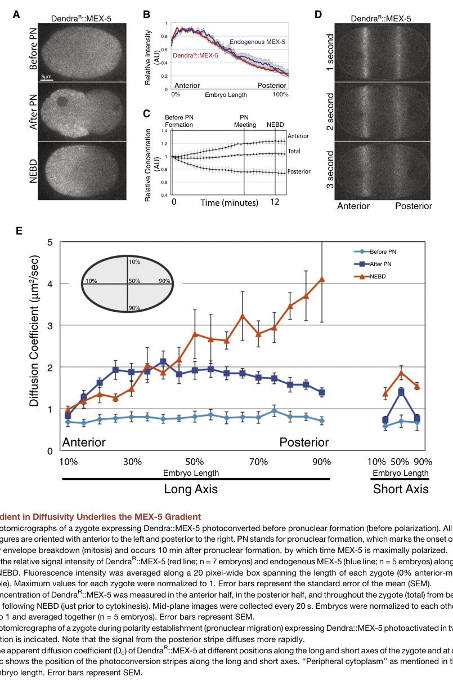

MEX-5 is a CCCH-type tandem zinc finger RNA-binding protein that is essential for establishing soma/germline asymmetry in early C. elegans embryos. MEX-5 forms an anterior-to-posterior concentration gradient in the one-cell embryo, with high concentrations at the anterior, driven by PAR-1-dependent phosphorylation that increases its diffusion rate in the posterior. MEX-5 functions by binding mRNA with high affinity (Kd ~10 nM) but low sequence specificity, recognizing tracts of 6+ uridines. This high-affinity mRNA binding allows MEX-5 to compete with PGL-3 (which binds RNA ~20-fold weaker) for mRNA, thereby dissolving P granules in the anterior cytoplasm and promoting their posterior localization through an mRNA competition mechanism. MEX-5 works redundantly with the nearly identical protein MEX-6. MEX-5 is also regulated by polo kinases (PLK-1, PLK-2) through binding to phosphorylated T186 (primed by MBK-2/DYRK2), which is important for its function in embryonic polarity.
| GO Term | Evidence | Action | Reason |
|---|---|---|---|
|
GO:0035925
mRNA 3'-UTR AU-rich region binding
|
IBA
GO_REF:0000033 |
MODIFY |
Summary: MEX-5 is a CCCH tandem zinc finger protein homologous to tristetraprolin (TTP/ZFP36) family members that bind AU-rich elements. However, MEX-5 has diverged from mammalian TZF proteins in its RNA specificity. While TTP binds UUAUUUAUU elements with high specificity, MEX-5 recognizes poly-uridine tracts (6+ U residues) with high affinity but low specificity (PMID:17264081). The IBA annotation may be based on phylogenetic inference from the TTP family, but MEX-5 has distinct binding specificity.
Reason: MEX-5 does not bind AU-rich elements with the specificity typical of TTP/ZFP36 family members. PMID:17264081 demonstrates the minimal binding site is a tract of six or more uridines and that mutation of a single amino acid in each MEX-5 zinc finger confers tristetraprolin-like specificity. The divergence of the discriminator residue in MEX-5 results in different binding specificity from mammalian TZF proteins. A more appropriate term would be poly-pyrimidine tract binding (GO:0008187) which is already annotated with IDA evidence.
Proposed replacements:
poly-pyrimidine tract binding
Supporting Evidence:
PMID:17264081
The minimal binding site is a tract of six or more uridines within a 9-13-nucleotide window. This sequence is remarkably abundant in the 3'-untranslated region of C. elegans transcripts, demonstrating that MEX-5 alone cannot specify mRNA target selection. In contrast, human TZF homologs tristetraprolin and ERF-2 bind with high specificity to UUAUUUAUU elements.
file:worm/mex-5/mex-5-deep-research-falcon.md
the retrieved evidence set does not specify a precise RNA **sequence motif** (e.g., AU-rich element consensus) for MEX-5 binding; claims about sequence specificity beyond 3′UTR interactions should therefore be treated as unresolved
|
|
GO:0000289
nuclear-transcribed mRNA poly(A) tail shortening
|
IBA
GO_REF:0000033 |
MARK AS OVER ANNOTATED |
Summary: This annotation is derived from phylogenetic inference based on homology to TTP/ZFP36 family members, which are well-established to promote mRNA deadenylation. However, there is no direct evidence that MEX-5 promotes poly(A) tail shortening in C. elegans. MEX-5's primary function appears to be competing with PGL-3 for mRNA binding to regulate P granule formation, not mRNA decay.
Reason: While MEX-5 is homologous to TTP/ZFP36 family members that promote mRNA deadenylation, the literature on MEX-5 focuses on its role in P granule dissolution via mRNA competition (PMID:27594427) and embryonic polarity (PMID:10882103), not mRNA decay. MEX-5 has divergent RNA binding specificity from its mammalian homologs. Without direct experimental evidence for deadenylation activity, this represents an over-annotation based on family function.
Supporting Evidence:
PMID:27594427
we show that competition between PGL-3 and MEX-5 for mRNA can regulate the formation of PGL-3 droplets.
file:worm/mex-5/mex-5-deep-research-falcon.md
MEX-5/6 are **RNA-binding polarity mediators** that act largely through **translational control** and regulated association with RNA-containing complexes. Their CCCH zinc fingers are required for normal mobility/asymmetry
|
|
GO:0000900
mRNA regulatory element binding translation repressor activity
|
IBA
GO_REF:0000033 |
UNDECIDED |
Summary: MEX-5 binds mRNA and is involved in regulating translation of germline proteins through its localization to the anterior. The IBA annotation suggests translation repressor activity based on phylogenetic inference. MEX-5 does affect expression of germline proteins in the anterior, but the mechanism involves mRNA competition with PGL-3 and P granule dissolution rather than direct translation repression.
Reason: While MEX-5 inhibits expression of germline proteins in the anterior (PMID:10882103),
the mechanism by which it does so is primarily through competing with PGL-3
for mRNA to dissolve P granules (PMID:27594427), rather than direct translation
repression. The falcon deep research further complicates a simple "translation
repressor" framing: the best-supported translational-control mechanism is that
MEX-5/6 act POSITIVELY on the zif-1 3'UTR to RELIEVE POS-1 repression (promoting
somatic zif-1 expression), which is the opposite of a repressor activity on that
target. MEX-5 may contribute to translation regulation indirectly, but there
is no direct evidence that it functions as a sequence-specific translation
repressor. This annotation requires further investigation.
Supporting Evidence:
PMID:10882103
Ectopic expression of MEX-5 is sufficient to inhibit the expression of germline proteins, suggesting that MEX-5 functions to inhibit anterior expression of the germline proteins.
PMID:27594427
we show that competition between PGL-3 and MEX-5 for mRNA can regulate the formation of PGL-3 droplets.
file:worm/mex-5/mex-5-deep-research-falcon.md
MEX-5/6 bind the *zif-1* 3′UTR and promote its expression in somatic lineages by antagonizing POS-1 repression, enabling ZIF-1–dependent degradation of germline proteins such as PIE-1/POS-1/MEX-1 in somatic cells
|
|
GO:0005829
cytosol
|
IBA
GO_REF:0000033 |
ACCEPT |
Summary: MEX-5 is a cytoplasmic protein that forms a concentration gradient enriched in the anterior of the early embryo. The cytosol annotation is consistent with experimental data showing cytoplasmic localization (PMID:10882103, PMID:18199581).
Reason: Cytosol is an appropriate term for MEX-5. MEX-5 is asymmetrically localized in the cytoplasm with enrichment in the anterior. UniProt confirms cytoplasmic localization based on multiple publications.
Supporting Evidence:
PMID:10882103
MEX-5 is a novel, cytoplasmic protein that is localized through PAR activities to the anterior pole of the 1-cell stage embryo.
PMID:18199581
These polo kinases are asymmetrically localized along the anteroposterior axis of newly fertilized C. elegans embryos in a pattern identical to that of MEX-5 and MEX-6.
file:worm/mex-5/mex-5-deep-research-falcon.md
MEX-5 is a non-enzymatic, cytoplasmic RNA-binding protein with **two CCCH zinc-finger domains**
|
|
GO:0160134
protein-RNA sequence-specific adaptor activity
|
IBA
GO_REF:0000033 |
MODIFY |
Summary: This annotation suggests MEX-5 functions as an adaptor between specific RNA sequences and proteins. While MEX-5 binds mRNA and interacts with proteins like PLK-1/PLK-2, its RNA binding is NOT sequence-specific - it binds poly-U tracts with high affinity but low specificity (PMID:17264081).
Reason: MEX-5 does not have sequence-specific RNA binding. PMID:17264081 clearly demonstrates that MEX-5 recognizes linear RNA sequences with high affinity but low specificity. The term "sequence-specific" in GO:0160134 does not apply to MEX-5's promiscuous binding to any poly-U tract. If an adaptor function term is needed, it should not include "sequence-specific."
Proposed replacements:
mRNA binding
Supporting Evidence:
PMID:17264081
Here we show that the TZF protein MEX-5, a primary anterior determinant, is an RNA-binding protein that recognizes linear RNA sequences with high affinity but low specificity.
file:worm/mex-5/mex-5-deep-research-falcon.md
the retrieved evidence set does not specify a precise RNA **sequence motif** (e.g., AU-rich element consensus) for MEX-5 binding; claims about sequence specificity beyond 3′UTR interactions should therefore be treated as unresolved
|
|
GO:0003677
DNA binding
|
IEA
GO_REF:0000043 |
REMOVE |
Summary: This annotation is inferred from the UniProt keyword "DNA-binding" based on the presence of zinc finger domains. However, MEX-5 contains CCCH-type zinc fingers which are RNA-binding domains, not DNA-binding domains. The experimental literature demonstrates MEX-5 is an RNA-binding protein, not a DNA-binding protein.
Reason: CCCH-type zinc fingers are RNA-binding domains, not DNA-binding domains. All experimental studies characterize MEX-5 as an RNA-binding protein (PMID:17264081, PMID:27594427). The UniProt keyword inference is incorrect for this protein family.
Supporting Evidence:
PMID:17264081
In Caenorhabditis elegans, a gradient of CCCH tandem zinc finger (TZF) proteins coordinates axis polarization and germline differentiation. These proteins govern expression from maternal mRNAs by an unknown mechanism. Here we show that the TZF protein MEX-5, a primary anterior determinant, is an RNA-binding protein
|
|
GO:0003723
RNA binding
|
IEA
GO_REF:0000043 |
ACCEPT |
Summary: MEX-5 is well-established as an RNA-binding protein through its CCCH tandem zinc fingers. Experimental studies demonstrate high-affinity mRNA binding with Kd ~10 nM (PMID:17264081).
Reason: RNA binding is a core function of MEX-5, extensively documented experimentally. MEX-5 binds mRNA with high affinity to compete with PGL-3 for mRNA (PMID:27594427).
Supporting Evidence:
PMID:17264081
Here we show that the TZF protein MEX-5, a primary anterior determinant, is an RNA-binding protein that recognizes linear RNA sequences with high affinity but low specificity.
PMID:27594427
we show that competition between PGL-3 and MEX-5 for mRNA can regulate the formation of PGL-3 droplets.
file:worm/mex-5/mex-5-deep-research-falcon.md
MEX-5 is a non-enzymatic, cytoplasmic RNA-binding protein with **two CCCH zinc-finger domains**
|
|
GO:0003729
mRNA binding
|
IEA
GO_REF:0000002 |
ACCEPT |
Summary: mRNA binding is a core function of MEX-5, demonstrated by biochemical studies showing high-affinity binding to mRNA (PMID:17264081, PMID:27594427). InterPro-based inference is correct for this protein.
Reason: This is a well-supported annotation. MEX-5 binds mRNA with high affinity through its tandem CCCH zinc fingers.
Supporting Evidence:
PMID:17264081
Here we show that the TZF protein MEX-5, a primary anterior determinant, is an RNA-binding protein that recognizes linear RNA sequences with high affinity but low specificity.
file:worm/mex-5/mex-5-deep-research-falcon.md
MEX-5/6 are **RNA-binding polarity mediators** that act largely through **translational control** and regulated association with RNA-containing complexes. Their CCCH zinc fingers are required for normal mobility/asymmetry
|
|
GO:0005737
cytoplasm
|
IEA
GO_REF:0000044 |
ACCEPT |
Summary: Cytoplasmic localization is well-established for MEX-5 through multiple experimental studies. MEX-5 forms an anterior-enriched gradient in the cytoplasm.
Reason: This is correct. MEX-5 is localized to the cytoplasm, with asymmetric enrichment in the anterior (PMID:10882103, PMID:18199581).
Supporting Evidence:
PMID:10882103
MEX-5 is a novel, cytoplasmic protein that is localized through PAR activities to the anterior pole of the 1-cell stage embryo.
file:worm/mex-5/mex-5-deep-research-falcon.md
MEX-5 is broadly cytoplasmic initially and becomes **anterior-enriched** by the end of the one-cell stage, contributing to preferential inheritance by the anterior AB blastomere.
|
|
GO:0008270
zinc ion binding
|
IEA
GO_REF:0000043 |
ACCEPT |
Summary: MEX-5 contains two CCCH-type zinc finger domains (positions 270-299 and 314-344 per UniProt), which coordinate zinc ions to form the RNA-binding structure.
Reason: Zinc binding is intrinsic to the CCCH zinc finger fold. The two C3H1-type zinc fingers are annotated in UniProt and are essential for MEX-5's RNA-binding function.
|
|
GO:0017148
negative regulation of translation
|
IEA
GO_REF:0000108 |
UNDECIDED |
Summary: This annotation is inferred from GO:0000900 (mRNA regulatory element binding translation repressor activity). While MEX-5 does inhibit expression of germline proteins in the anterior, this appears to be primarily through P granule dissolution via mRNA competition rather than direct translation repression.
Reason: The inference is based on GO:0000900 which is itself questionable. MEX-5
affects germline protein expression but the mechanism may be through P granule
organization rather than direct translation regulation. The falcon deep research
notes the best-characterized MEX-5/6 translational-control activity (on the zif-1
3'UTR) is POSITIVE — relieving POS-1 repression to promote somatic zif-1 expression —
not a negative regulation of translation, so the directionality of this inferred
term does not match the strongest published mechanism. Needs direct experimental
evidence for translation repression activity.
Supporting Evidence:
PMID:10882103
Ectopic expression of MEX-5 is sufficient to inhibit the expression of germline proteins, suggesting that MEX-5 functions to inhibit anterior expression of the germline proteins.
file:worm/mex-5/mex-5-deep-research-falcon.md
MEX-5/6 bind the *zif-1* 3′UTR and promote its expression in somatic lineages by antagonizing POS-1 repression, enabling ZIF-1–dependent degradation of germline proteins such as PIE-1/POS-1/MEX-1 in somatic cells
|
|
GO:0043186
P granule
|
IEA
GO_REF:0000117 |
REMOVE |
Summary: This IEA annotation suggests MEX-5 is located in P granules. However, MEX-5 is primarily localized to the anterior cytoplasm where P granules are absent/dissolved. MEX-5 dissolves P granules rather than residing in them.
Reason: MEX-5 is not a resident P granule component - it actively dissolves P granules by competing for mRNA (PMID:27594427). MEX-5 is enriched in the anterior where P granules are dissolved, so the "located_in P granule" cellular-component annotation is misleading and should be removed. MEX-5 may transiently interact with P granules but is functionally opposed to them. The biological-process role of MEX-5 in driving P granule disassembly is captured separately by the GO:1903864 (P granule disassembly) NEW annotation.
Supporting Evidence:
PMID:27594427
We conclude that gradients of polarity proteins can position RNP granules during development by using RNA competition to regulate local phase separation.
file:worm/mex-5/mex-5-deep-research-falcon.md
high anterior MEX-5 promotes **P-granule dissolution**, whereas low posterior MEX-5 permits **condensation/phase separation** of germ plasm assemblies
|
|
GO:0046872
metal ion binding
|
IEA
GO_REF:0000120 |
ACCEPT |
Summary: MEX-5 contains CCCH zinc finger domains that bind zinc ions. Metal ion binding is a valid but generic annotation.
Reason: This is correct - the CCCH zinc fingers coordinate zinc ions. GO:0008270 (zinc ion binding) is more specific and also annotated.
|
|
GO:0019901
protein kinase binding
|
IPI
PMID:18199581 Polo kinases regulate C. elegans embryonic polarity via bind... |
ACCEPT |
Summary: PMID:18199581 demonstrates that MEX-5 (when phosphorylated on T186) binds to polo kinases PLK-1 and PLK-2 via their polo box domains. This is a direct experimental observation.
Reason: PMID:18199581 provides direct experimental evidence for MEX-5 binding to polo kinases. This interaction is functionally significant for embryonic polarity.
Supporting Evidence:
PMID:18199581
We show that polo kinases, via their polo box domains, bind to and regulate the activity of two key polarity proteins, MEX-5 and MEX-6.
file:worm/mex-5/mex-5-deep-research-falcon.md
MEX-5/6 are required for **anterior enrichment of PLK-1 and PLK-2**, and PLK-1/2 bind MEX-5/6 via their **polo-box domains**.
|
|
GO:0019904
protein domain specific binding
|
IPI
PMID:18199581 Polo kinases regulate C. elegans embryonic polarity via bind... |
ACCEPT |
Summary: MEX-5 binds specifically to the polo box domains of PLK-1 and PLK-2 when phosphorylated at T186. This is a legitimate domain-specific interaction.
Reason: PMID:18199581 demonstrates that MEX-5 binds to polo kinases via their polo box domains, supporting the protein domain specific binding annotation.
Supporting Evidence:
PMID:18199581
polo kinases, via their polo box domains, bind to and regulate the activity of two key polarity proteins, MEX-5 and MEX-6.
file:worm/mex-5/mex-5-deep-research-falcon.md
Disrupting MEX-5–PLK binding impairs key MEX-5 activities (e.g., promoting PIE-1 degradation) without necessarily eliminating MEX-5 asymmetry, consistent with an adaptor/scaffold role rather than purely a localization effect.
|
|
GO:0032880
regulation of protein localization
|
IMP
PMID:18199581 Polo kinases regulate C. elegans embryonic polarity via bind... |
ACCEPT |
Summary: MEX-5 regulates the asymmetric localization of multiple proteins including PLK-1, PIE-1, MEX-1, and POS-1 during early embryogenesis. This is extensively documented.
Reason: This is a core function of MEX-5. MEX-5 establishes asymmetric distribution of germline proteins to the posterior by inhibiting their expression/localization in the anterior (PMID:10882103, PMID:18199581).
Supporting Evidence:
PMID:10882103
This network is required for subsequent asymmetries in the expression patterns of several proteins that are encoded by nonlocalized, maternally expressed mRNAs.
PMID:18199581
This asymmetric localization of polo kinases depends on MEX-5 and MEX-6, as well as genes regulating MEX-5 and MEX-6 asymmetry.
file:worm/mex-5/mex-5-deep-research-falcon.md
MEX-5 recruits PLK-1 to the anterior, and a MEX-5 polo-docking site is required for PLK-1 to inhibit retention of posterior determinants
|
|
GO:0032880
regulation of protein localization
|
IGI
PMID:18199581 Polo kinases regulate C. elegans embryonic polarity via bind... |
ACCEPT |
Summary: Same term as above but with IGI evidence code (genetic interaction). MEX-5 and MEX-6 work redundantly to regulate protein localization.
Reason: The redundant function with MEX-6 is well-documented. MEX-5/MEX-6 double knockdown shows stronger phenotypes than single knockdowns.
Supporting Evidence:
PMID:10882103
We provide evidence that two nearly identical genes, mex-5 and mex-6, link PAR asymmetry to those subsequent protein asymmetries.
|
|
GO:0003730
mRNA 3'-UTR binding
|
IDA
PMID:17264081 Molecular basis of RNA recognition by the embryonic polarity... |
ACCEPT |
Summary: PMID:17264081 demonstrates that MEX-5 binds to 3'-UTR sequences containing poly-U tracts. This is direct experimental evidence for 3'-UTR binding.
Reason: PMID:17264081 shows MEX-5 recognizes poly-U tracts that are abundant in 3'-UTRs. The binding specificity studies were performed with RNA sequences.
Supporting Evidence:
PMID:17264081
This sequence is remarkably abundant in the 3'-untranslated region of C. elegans transcripts
|
|
GO:0005737
cytoplasm
|
IDA
PMID:10882103 MEX-5 and MEX-6 function to establish soma/germline asymmetr... |
ACCEPT |
Summary: PMID:10882103 establishes that MEX-5 is a cytoplasmic protein localized to the anterior of the 1-cell embryo. This is primary experimental evidence.
Reason: This is the original study characterizing MEX-5 localization. Direct observation of cytoplasmic localization.
Supporting Evidence:
PMID:10882103
MEX-5 is a novel, cytoplasmic protein that is localized through PAR activities to the anterior pole of the 1-cell stage embryo.
|
|
GO:0005737
cytoplasm
|
IDA
PMID:12588843 Polarization of the C. elegans zygote proceeds via distinct ... |
ACCEPT |
Summary: PMID:12588843 confirms cytoplasmic localization of MEX-5 using GFP fusions and time-lapse microscopy during embryo polarization.
Reason: Additional experimental confirmation of cytoplasmic localization with detailed localization dynamics.
Supporting Evidence:
PMID:12588843
Using time-lapse microscopy and GFP fusions, we have analyzed the localization dynamics of PAR-2, PAR-6, MEX-5, MEX-6 and PIE-1 in wild-type and mutant embryos.
|
|
GO:0008187
poly-pyrimidine tract binding
|
IDA
PMID:17264081 Molecular basis of RNA recognition by the embryonic polarity... |
ACCEPT |
Summary: PMID:17264081 directly demonstrates that MEX-5 recognizes poly-uridine tracts (6+ U residues) as its binding site. This is high-quality experimental evidence for poly- pyrimidine tract binding.
Reason: This is a core molecular function of MEX-5, directly demonstrated by biochemical studies. MEX-5 binds poly-U with high affinity (Kd ~10 nM).
Supporting Evidence:
PMID:17264081
The minimal binding site is a tract of six or more uridines within a 9-13-nucleotide window.
file:worm/mex-5/mex-5-deep-research-falcon.md
MEX-5 exists in at least two effective mobility classes consistent with binding to RNA-containing complexes
|
|
GO:0043186
P granule
|
IDA
PMID:12588843 Polarization of the C. elegans zygote proceeds via distinct ... |
REMOVE |
Summary: PMID:12588843 may show MEX-5 association with P granules, but the functional relationship is that MEX-5 dissolves P granules. The "located_in" qualifier is problematic because MEX-5 is enriched in regions where P granules are absent.
Reason: While MEX-5 may transiently interact with or be detected near P granules
during polarization, its primary functional relationship is to dissolve P granules
by competing for mRNA (PMID:27594427). The falcon deep research likewise notes
MEX-5 is only "reported on P granules/RNP assemblies" while its mechanistic role
is to drive their dissolution in the high-MEX-5 anterior, which argues against
a stable "located_in P granule" cellular-component annotation. The annotation
should be removed; MEX-5's biological-process role in P granule disassembly is
captured separately by the GO:1903864 (P granule disassembly) NEW annotation.
Supporting Evidence:
PMID:27594427
MEX-5 can regulate PGL-3 drop formation by competing with PGL-3 for mRNA binding.
file:worm/mex-5/mex-5-deep-research-falcon.md
it is also reported on **P granules/RNP assemblies** during early divisions. In par-1 mutants, the gradient is weakened or lost.
|
|
GO:0005813
centrosome
|
IDA
PMID:10882103 MEX-5 and MEX-6 function to establish soma/germline asymmetr... |
KEEP AS NON CORE |
Summary: PMID:10882103 reports centrosomal localization of MEX-5. This is experimental observation but the primary localization of MEX-5 is in the anterior cytoplasm.
Reason: Centrosomal localization may be observed but is not the primary functional localization of MEX-5. The core localization is the anterior cytoplasm where MEX-5 forms its concentration gradient. This annotation can be kept but should not be considered a core function.
Supporting Evidence:
PMID:10882103
MEX-5 is a novel, cytoplasmic protein that is localized through PAR activities to the anterior pole of the 1-cell stage embryo.
|
|
GO:1903864
P granule disassembly
|
IMP
PMID:27594427 Polar Positioning of Phase-Separated Liquid Compartments in ... |
NEW |
Summary: PMID:27594427 demonstrates that MEX-5 dissolves P granules by competing with PGL-3 for mRNA binding. This is a core function of MEX-5 and should be annotated.
Reason: P granule disassembly is a key function of MEX-5. The protein competes with PGL-3 for mRNA with ~20-fold higher affinity, thereby preventing P granule assembly in the anterior.
Supporting Evidence:
PMID:27594427
In this model, MEX-5 influences the demixing of PGL-3 and mRNA by depleting the local free mRNA concentration.
file:worm/mex-5/mex-5-deep-research-falcon.md
high anterior MEX-5 correlates with dissolution, while low posterior MEX-5 permits condensation/phase separation, providing a physical mechanism for segregating germ plasm components downstream of PAR polarity.
|
|
GO:0008595
anterior/posterior axis specification, embryo
|
IMP
PMID:10882103 MEX-5 and MEX-6 function to establish soma/germline asymmetr... |
NEW |
Summary: MEX-5 is essential for establishing anterior/posterior asymmetry in early C. elegans embryos, functioning downstream of PAR proteins to distribute germline determinants.
Reason: A/P axis specification is a core biological process for MEX-5. The protein links PAR polarity to downstream protein asymmetries (PMID:10882103).
Supporting Evidence:
PMID:10882103
We provide evidence that two nearly identical genes, mex-5 and mex-6, link PAR asymmetry to those subsequent protein asymmetries.
PMID:12588843
Polarization of the C. elegans zygote along the anterior-posterior axis depends on cortically enriched (PAR) and cytoplasmic (MEX-5/6) proteins
file:worm/mex-5/mex-5-deep-research-falcon.md
MEX-5/6 are downstream effectors of PAR polarity that help segregate and/or regulate degradation of determinants (PIE-1, POS-1, MEX-1) and thereby influence early fate decisions
|
|
GO:0030719
P granule organization
|
IMP
PMID:27594427 Polar Positioning of Phase-Separated Liquid Compartments in ... |
NEW |
Summary: MEX-5 regulates P granule organization through its mRNA competition mechanism, controlling when and where P granules assemble in the embryo.
Reason: P granule organization is a core process regulated by MEX-5. The MEX-5 gradient drives P granule segregation to the posterior.
Supporting Evidence:
PMID:27594427
We conclude that gradients of polarity proteins can position RNP granules during development by using RNA competition to regulate local phase separation.
file:worm/mex-5/mex-5-deep-research-falcon.md
high anterior MEX-5 correlates with dissolution, while low posterior MEX-5 permits condensation/phase separation, providing a physical mechanism for segregating germ plasm components downstream of PAR polarity.
|
Q: Does MEX-5 directly repress translation, or is its effect on germline protein expression entirely through P granule dissolution?
Q: What is the structural basis for MEX-5's low sequence specificity compared to its TTP homologs?
Experiment: Perform ribosome profiling/Ribo-seq to determine if MEX-5 directly affects translation. This would distinguish between MEX-5's proposed translation repression activity and its documented mRNA competition function.
Hypothesis: MEX-5 affects germline protein expression through P granule dissolution rather than direct translation repression
Experiment: Perform CLIP-seq to identify MEX-5 RNA targets genome-wide. This would validate the low-specificity binding model and identify which mRNAs MEX-5 competes for with PGL-3.
Hypothesis: MEX-5 binds promiscuously to most mRNAs containing poly-U tracts
The research report should be a detailed narrative explaining the function, biological processes, and localization of the gene product. Citations should be given for all claims.
You should prioritize authoritative reviews and primary scientific literature when conducting research. You can supplement
this with annotations you find in gene/protein databases, but these can be outdated or inaccurate.
We are specifically interested in the primary function of the gene - for enzymes, what reaction is catalyzed, and what is the substrate specificity? For transporters, what is the substrate? For structural proteins or adapters, what is the broader structural role? For signaling molecules, what is the role in the pathway.
We are interested in where in or outside the cell the gene product carries out its function.
We are also interested in the signaling or biochemical pathways in which the gene functions. We are less interested in broad pleiotropic effects, except where these elucidate the precise role.
Include evidence where possible. We are interested in both experimental evidence as well as inference from structure, evolution, or bioinformatic analysis. Precise studies should be prioritized over high-throughput, where available.
mex-5 encodes a cytoplasmic RNA-binding protein with tandem CCCH-type zinc finger domains that becomes enriched in the anterior cytoplasm of the one-cell C. elegans embryo and functions redundantly with mex-6 to translate cortical PAR polarity into cytoplasmic asymmetries. Mechanistically, posterior PAR-1 kinase activity and broadly distributed PP2A/LET-92 phosphatase activity control a phosphorylation cycle (including MEX-5 S404 and S458) that shifts MEX-5 between slow- and fast-diffusing states, producing an anterior-high concentration gradient. This gradient helps pattern germline/soma fate determinants (e.g., PIE-1/POS-1/MEX-1) via translational regulation (notably of zif-1 through its 3′UTR) and is conceptually linked to regulation of P-granule condensation/dissolution by phase-separation principles. Recent 2023–2024 work emphasizes that cytoplasmic polarity factors (including MEX-5 and PLK-1) contribute to robust, redundant pathways for reestablishing PAR polarity in the P1 cell, and reinforces MEX-5’s role as a scaffold that recruits PLK-1 to the anterior to control polarization of additional germline factors. (rose2014polarityestablishmentasymmetric pages 24-26, rose2014polarityestablishmentasymmetric pages 26-29, kim2024plk1regulatesmex1 pages 1-6, griffin2011regulationofthe pages 8-9, spilker2009mapkinasesignaling pages 8-9, hoege2013principlesofpar pages 6-7, koch2023multiplepathwaysfor pages 1-4)
The literature retrieved and cited here consistently refers to Caenorhabditis elegans mex-5, originally described as encoding a novel protein with two CCCH zinc-finger domains implicated in RNA binding and acting redundantly with mex-6 in early embryogenesis; this matches the UniProt target description for Q9XUB2 (“Zinc finger protein mex-5”) and the specified CCCH/ZFP36-like domain context. (kemphues2000parsingembryonicpolarity pages 1-2, rose2014polarityestablishmentasymmetric pages 23-24)
In the one-cell embryo, cortical anterior PAR proteins (e.g., PAR-3/PAR-6/PKC-3) and posterior PAR proteins (including PAR-1) form mutually exclusive cortical domains. “Polarity mediators” such as MEX-5/6 act downstream of these cortical cues to generate cytoplasmic asymmetries that ultimately drive differential inheritance of fate determinants. MEX-5 is categorized among RNA-binding polarity mediators with tandem CCCH zinc-finger domains, consistent with translational control mechanisms. (rose2014polarityestablishmentasymmetric pages 23-24, rose2014polarityestablishmentasymmetric pages 24-26)
A major conceptual advance is that a stable cytoplasmic protein gradient can form without localized synthesis/degradation if diffusivity varies spatially. For MEX-5, a posterior-high PAR-1 kinase activity gradient and a broadly distributed phosphatase activity (PP2A/LET-92) drive phosphorylation-state interconversion between slow and fast diffusing MEX-5 species, yielding net anterior enrichment. (griffin2011regulationofthe pages 1-2, griffin2011regulationofthe pages 8-9, hoege2013principlesofpar pages 6-7)
Authoritative reviews synthesize evidence supporting a coupling between the MEX-5 gradient and P-granule behavior: high anterior MEX-5 correlates with dissolution, while low posterior MEX-5 permits condensation/phase separation, providing a physical mechanism for segregating germ plasm components downstream of PAR polarity. (hoege2013principlesofpar pages 5-6, hoege2013principlesofpar pages 7-8)
MEX-5 is a non-enzymatic, cytoplasmic RNA-binding protein with two CCCH zinc-finger domains; mex-5 and mex-6 act redundantly in early embryos. (kemphues2000parsingembryonicpolarity pages 1-2, rose2014polarityestablishmentasymmetric pages 23-24)
A well-supported functional model is that MEX-5/6 act through 3′UTR-mediated translational regulation. A key example is zif-1: MEX-5/6 bind the zif-1 3′UTR and promote its expression in somatic lineages by antagonizing POS-1 repression, enabling ZIF-1–dependent degradation of germline proteins such as PIE-1/POS-1/MEX-1 in somatic cells, thereby reinforcing lineage-specific determinants. (rose2014polarityestablishmentasymmetric pages 26-29)
MEX-5/6 are required for anterior enrichment of PLK-1 and PLK-2, and PLK-1/2 bind MEX-5/6 via their polo-box domains. Disrupting MEX-5–PLK binding impairs key MEX-5 activities (e.g., promoting PIE-1 degradation) without necessarily eliminating MEX-5 asymmetry, consistent with an adaptor/scaffold role rather than purely a localization effect. (rose2014polarityestablishmentasymmetric pages 26-29)
A recent 2024 preprint reiterates a mechanistic framework in which MEX-5 recruits PLK-1 to the anterior, and a MEX-5 polo-docking site is required for PLK-1 to inhibit retention of posterior determinants (discussed there in the context of POS-1 and MEX-1 polarization). (kim2024plk1regulatesmex1 pages 1-6)
MEX-5 is broadly cytoplasmic initially and becomes anterior-enriched by the end of the one-cell stage, contributing to preferential inheritance by the anterior AB blastomere. (rose2014polarityestablishmentasymmetric pages 24-26, kemphues2000parsingembryonicpolarity pages 1-2)
Griffin et al. (Cell, 2011; publication date Sep 2011; https://doi.org/10.1016/j.cell.2011.08.012) provide direct mechanistic evidence that the MEX-5 gradient is driven by a gradient in diffusivity and a PAR-1/PP2A phosphorylation cycle. (griffin2011regulationofthe pages 1-2, griffin2011regulationofthe pages 6-7, griffin2011regulationofthe pages 8-9)
Key experimentally supported points include:
- PAR-1 phosphorylates MEX-5 in vitro and in vivo, with mapped sites including S404 and S458; an S404A/S458A double mutant is not phosphorylated in vitro by activated PAR-1. (griffin2011regulationofthe pages 3-5)
- PP2A/LET-92 antagonizes this phosphorylation: S404 is rapidly dephosphorylated in embryo extracts; okadaic acid sensitivity and let-92(RNAi) support PP2A involvement, and PP2A depletion increases MEX-5 mobility and weakens asymmetry. (griffin2011regulationofthe pages 6-7, griffin2011regulationofthe pages 9-10)
- MEX-5 exists in at least two effective mobility classes consistent with binding to RNA-containing complexes: FCS supports a fast (~5.15 μm²/s) and slow (~0.086 μm²/s) diffusive class, with different anterior/posterior weighting. (griffin2011regulationofthe pages 8-9)
Quantitative results reported include:
- Apparent diffusion coefficients from photoconversion analysis for full-length MEX-5: ~1.03 ± 0.11 μm²/s (anterior) versus ~2.68 ± 0.24 μm²/s (posterior). (griffin2011regulationofthe pages 6-7)
- FCS-derived two-component weighted averages: ~1.40 ± 0.29 μm²/s (anterior) and ~3.13 ± 0.37 μm²/s (posterior); slow:fast ratios of 66:34 anterior vs 50:50 posterior, consistent with enrichment of slow (complex-associated) MEX-5 anteriorly. (griffin2011regulationofthe pages 8-9)
- In genetic interaction studies, MEX-5 anterior enrichment ratios were quantified as 2.2 ± 0.5 (wild type; n=35), 1.5 ± 0.3 (par-1; n=35), and 1.8 ± 0.4 (mpk-1;par-1; n=35), supporting partial restoration of MEX-5 asymmetry when MPK-1 is removed in a par-1 background. (spilker2009mapkinasesignaling pages 8-9)
Figure-based support: Griffin et al. Figure 1 visualizes Dendra::MEX-5 gradient formation, the photoconversion stripes used to probe differential diffusion, and the quantified spatial diffusion coefficients, providing direct visual evidence for the diffusivity-gradient mechanism. (griffin2011regulationofthe media d5d2d38b)
MEX-5/6 are downstream effectors of PAR polarity that help segregate and/or regulate degradation of determinants (PIE-1, POS-1, MEX-1) and thereby influence early fate decisions; maternal mex-5 mutants show early embryonic arrest and lineage specification defects, consistent with a central role in early embryogenesis distinct from, but downstream of, PAR cortical polarity establishment. (kemphues2000parsingembryonicpolarity pages 1-2, rose2014polarityestablishmentasymmetric pages 26-29)
MAPK signaling (MPK-1/ERK) genetically antagonizes PAR-1. Loss of mpk-1 partially suppresses par-1 defects, including partial restoration of MEX-5 asymmetry and partial restoration of PIE-1 enrichment; P granules that are absent in one-cell par-1 embryos reappear in mpk-1; par-1 embryos though remain mislocalized. (spilker2009mapkinasesignaling pages 8-9, spilker2009mapkinasesignaling pages 1-2)
Koch & Rose (bioRxiv; DOI 10.1101/2022.12.15.520651; posted Dec 2023: https://doi.org/10.1101/2022.12.15.520651) propose that PAR polarity in the P1 cell is reestablished via at least two parallel pathways. The early pathway depends on PAR-1/PKC-3 and downstream cytoplasmic polarity factors (explicitly including MEX-5 and PLK-1), while a later pathway resembles one-cell symmetry breaking and involves actomyosin flow and AIR-1. They report that the posterior PAR-2 domain begins forming within ~2 minutes after P0 cytokinesis and is present within ~4 minutes, emphasizing rapid polarity establishment requiring cytoplasmic regulators. (koch2023multiplepathwaysfor pages 1-4, koch2023howparpolarity pages 20-23)
Kim et al. (bioRxiv; DOI 10.1101/2024.07.26.605193; posted Jul 2024: https://doi.org/10.1101/2024.07.26.605193) extend the MEX-5/PLK-1 framework by testing PLK-1-dependent polarization of MEX-1, explicitly requiring PLK kinase activity and the MEX-5–PLK-1 interaction for proper segregation dynamics. Although centered on MEX-1, this supports the modern view that MEX-5 is an organizing hub that positions PLK-1 to regulate retention/segregation of germline factors. (kim2024plk1regulatesmex1 pages 1-6, kim2024plk1regulatesmex1 pages 19-22)
MEX-5 is widely used as an experimentally grounded example of a cytoplasmic protein gradient generated through spatially controlled mobility states, informing theoretical and computational work on polarity and gradient formation (e.g., explicit two-state diffusion and kinase/phosphatase models parameterized with measured diffusion coefficients). (griffin2011regulationofthe pages 8-9, griffin2011regulationofthe pages 9-10)
The PAR→MEX-5→P granule conceptual chain is frequently used to connect cell polarity to condensate phase behavior, motivating experimental designs that probe how RNA-binding proteins modulate solubility and assembly of RNP granules in living embryos and in reconstitution contexts. (hoege2013principlesofpar pages 5-6, hoege2013principlesofpar pages 7-8)
Two highly cited authoritative reviews summarize consensus models:
- Hoege & Hyman (Nature Reviews Molecular Cell Biology; Apr 2013; https://doi.org/10.1038/nrm3558) emphasize that PAR polarity can generate cytosolic gradients by modulating diffusion/complex size through phosphorylation cycles, and explicitly place MEX-5/6 as central to linking PAR-1 to P-granule phase separation. (hoege2013principlesofpar pages 5-6, hoege2013principlesofpar pages 6-7)
- Rose & Gönczy (WormBook; Dec 2014; https://doi.org/10.1895/wormbook.1.30.2) synthesize mechanistic evidence that MEX-5/6 integrate phosphorylation-dependent mobility control with translational regulation (e.g., zif-1 3′UTR control) and kinase recruitment (PLK-1/2), explaining how cytoplasmic polarity is created and then translated into fate outcomes. (rose2014polarityestablishmentasymmetric pages 24-26, rose2014polarityestablishmentasymmetric pages 26-29)
The following table consolidates key mechanistic and quantitative findings, with source URLs and publication context.
| Aspect | Key findings | Evidence type/method | Source (with year/URL) |
|---|---|---|---|
| Identity and domains | mex-5 in Caenorhabditis elegans encodes an embryonic polarity mediator with two tandem CCCH zinc-finger domains, consistent with an RNA-binding protein and matching the UniProt Q9XUB2 domain context. It functions redundantly with the close paralog mex-6. (kemphues2000parsingembryonicpolarity pages 1-2, rose2014polarityestablishmentasymmetric pages 23-24) | Gene identification, mutant analysis, protein domain annotation from primary and review literature | Kemphues 2000, https://doi.org/10.1016/S0092-8674(00)80844-2; Rose & Gonczy 2014, https://doi.org/10.1895/wormbook.1.30.2 |
| Localization pattern in early embryo | MEX-5 is initially broadly cytoplasmic after fertilization, then becomes anterior-enriched by the end of the one-cell stage and is preferentially inherited by AB; it is also reported on P granules/RNP assemblies during early divisions. In par-1 mutants, the gradient is weakened or lost. (rose2014polarityestablishmentasymmetric pages 24-26, spilker2009mapkinasesignaling pages 1-2, hoege2013principlesofpar pages 4-5) | Live imaging of GFP/Dendra-tagged proteins; endogenous protein localization; mutant phenotyping | Griffin 2011, https://doi.org/10.1016/j.cell.2011.08.012; Spilker 2009, https://doi.org/10.1534/genetics.109.106716; Rose & Gonczy 2014, https://doi.org/10.1895/wormbook.1.30.2 |
| Core molecular function: RNA binding | MEX-5/6 are RNA-binding polarity mediators that act largely through translational control and regulated association with RNA-containing complexes. Their CCCH zinc fingers are required for normal mobility/asymmetry, supporting direct functional coupling between RNA binding and polarity formation. (rose2014polarityestablishmentasymmetric pages 24-26, rose2014polarityestablishmentasymmetric pages 23-24, griffin2011regulationofthe pages 6-7) | Domain-function inference, mutational analysis of zinc fingers, biochemical and imaging studies | Rose & Gonczy 2014, https://doi.org/10.1895/wormbook.1.30.2; Griffin 2011, https://doi.org/10.1016/j.cell.2011.08.012 |
| Translational regulation / zif-1 pathway | MEX-5/6 bind the zif-1 3′UTR and act positively to relieve repression, antagonizing POS-1 on the same regulatory region; this enables somatic zif-1 expression and downstream ZIF-1–dependent degradation of germline determinants such as PIE-1, POS-1, and MEX-1 in somatic lineages. (rose2014polarityestablishmentasymmetric pages 26-29) | 3′UTR regulatory assays, genetic interaction analysis, developmental phenotyping summarized in review | Rose & Gonczy 2014, https://doi.org/10.1895/wormbook.1.30.2 |
| Scaffold/recruiter for polo kinases | MEX-5/6 are required for anterior enrichment of PLK-1 and PLK-2; the polo kinases bind MEX-5/6 via their polo-box domains. Mutations that disrupt PLK binding impair MEX-5 function without abolishing MEX-5 asymmetry, supporting a scaffold/adaptor role rather than simple localization dependence. Recent work reiterates that MEX-5 recruits PLK-1 to the anterior cytoplasm to regulate segregation of posterior factors. (rose2014polarityestablishmentasymmetric pages 26-29, kim2024plk1regulatesmex1 pages 1-6) | Yeast two-hybrid interaction assays, mutant functional analysis, recent mechanistic preprint | Rose & Gonczy 2014, https://doi.org/10.1895/wormbook.1.30.2; Kim et al. 2024, https://doi.org/10.1101/2024.07.26.605193 |
| Upstream regulator: PAR-1 | PAR-1 is the principal upstream kinase coupling cortical/cytoplasmic polarity to MEX-5 asymmetry. Posterior PAR-1 activity phosphorylates MEX-5, increases its mobility in the posterior, and thereby drives formation of the anterior-high MEX-5 gradient. (folkmann2019spatialregulationof pages 1-3, griffin2011regulationofthe pages 1-2, griffin2011regulationofthe pages 3-5) | In vitro kinase assays, phosphosite mapping, live photoconversion/diffusion analysis, mechanistic modeling | Griffin 2011, https://doi.org/10.1016/j.cell.2011.08.012; Folkmann & Seydoux 2019, https://doi.org/10.1242/dev.171116 |
| Antagonistic phosphatase control | A largely uniform PP2A/LET-92 phosphatase antagonizes PAR-1-dependent phosphorylation, returning MEX-5 to slower-diffusing states; reducing PP2A activity increases mobility and weakens asymmetry. (griffin2011regulationofthe pages 6-7, griffin2011regulationofthe pages 9-10) | Okadaic acid sensitivity, let-92(RNAi), phospho-specific antibodies, reaction-diffusion modeling | Griffin 2011, https://doi.org/10.1016/j.cell.2011.08.012 |
| Key phosphorylation sites | PAR-1 phosphorylates MEX-5 at S404 and S458; the S404A/S458A double mutant is no longer a substrate in the in vitro PAR-1 assay. S404 is rapidly dephosphorylated in embryo extract and linked to PP2A-sensitive regulation; S458 is also par-1/par-4 dependent and contributes to fast diffusion, but phosphorylation at S458 alone does not fully explain gradient formation. (griffin2011regulationofthe pages 1-2, griffin2011regulationofthe pages 6-7, griffin2011regulationofthe pages 3-5) | In vitro kinase assays with activated PAR-1, phosphosite mutagenesis, phospho-specific antibodies, embryo extracts | Griffin 2011, https://doi.org/10.1016/j.cell.2011.08.012 |
| Quantitative diffusion measurements | Full-length MEX-5 apparent diffusion coefficients from Dendra photoconversion were ~1.03 ± 0.11 μm²/s anterior and 2.68 ± 0.24 μm²/s posterior. FCS supported two effective diffusive classes: fast ~5.15 μm²/s and slow ~0.086 μm²/s; weighted averages were ~1.40 ± 0.29 μm²/s anterior and 3.13 ± 0.37 μm²/s posterior. (griffin2011regulationofthe pages 6-7, griffin2011regulationofthe pages 8-9) | Photoconversion stripe assays, fluorescence correlation spectroscopy (FCS), quantitative modeling | Griffin 2011, https://doi.org/10.1016/j.cell.2011.08.012 |
| Quantitative composition of mobility states | FCS indicated the slow:fast MEX-5 concentration ratio is about 66:34 in the anterior versus 50:50 in the posterior, implying the anterior is enriched for slow, likely RNA-complexed species that dominate the visible protein gradient. (griffin2011regulationofthe pages 8-9, griffin2011regulationofthe pages 9-10) | FCS two-component fitting, reaction-diffusion interpretation | Griffin 2011, https://doi.org/10.1016/j.cell.2011.08.012 |
| Quantitative gradient timing/model | Modeling with Dfast = 5 μm²/s and Dslow = 0.07 μm²/s showed that a cytoplasmic kinase/phosphatase cycle can establish the gradient rapidly (example ~160 s with kphos = 0.1 s⁻¹), whereas a cortical-only PAR-1 model would be much slower (~17 min), supporting a cytoplasmic PAR-1 activity gradient. (griffin2011regulationofthe pages 8-9, griffin2011regulationofthe pages 9-10) | Reaction-diffusion modeling anchored to in vivo diffusion measurements | Griffin 2011, https://doi.org/10.1016/j.cell.2011.08.012 |
| MAPK antagonism / genetic suppression | Wild-type embryos showed a MEX-5 anterior enrichment ratio of 2.2 ± 0.5 (n=35), par-1 mutants 1.5 ± 0.3 (n=35), and mpk-1; par-1 double mutants 1.8 ± 0.4 (n=35), indicating partial restoration of asymmetry. Embryonic viability was also improved in the double mutant (reported approximately 38 ± 9% versus very low viability for par-1 alone in the cited excerpt). (spilker2009mapkinasesignaling pages 8-9, spilker2009mapkinasesignaling pages 6-8) | Quantitative fluorescence ratio measurements; suppressor genetics | Spilker 2009, https://doi.org/10.1534/genetics.109.106716 |
| Downstream effects on PIE-1 and P granules | par-1 mutants strongly reduce posterior PIE-1 enrichment (~1.8 ± 3 vs 6.1 ± 1.4 in wild type; n=39), while mpk-1; par-1 partially restores it (~2.5 ± 0.9). P granules are absent in one-cell par-1 embryos but reappear in mpk-1; par-1 embryos, though not properly posterior-localized. MEX-5/6 are thus central to partitioning germline condensates and determinants. (spilker2009mapkinasesignaling pages 8-9, hoege2013principlesofpar pages 5-6, hoege2013principlesofpar pages 7-8) | Immunofluorescence/localization phenotyping, suppressor genetics, conceptual synthesis | Spilker 2009, https://doi.org/10.1534/genetics.109.106716; Hoege & Hyman 2013, https://doi.org/10.1038/nrm3558 |
| Conceptual model: phase separation / condensates | Current understanding is that the MEX-5 gradient links membrane PAR polarity to cytoplasmic phase behavior: high anterior MEX-5 promotes P-granule dissolution, whereas low posterior MEX-5 permits condensation/phase separation of germ plasm assemblies. This model explains how cortical asymmetry is translated into cytoplasmic organization. (hoege2013principlesofpar pages 6-7, hoege2013principlesofpar pages 5-6, hoege2013principlesofpar pages 7-8, rose2014polarityestablishmentasymmetric pages 24-26) | Integrative expert review drawing on primary biophysical and developmental studies | Hoege & Hyman 2013, https://doi.org/10.1038/nrm3558; Rose & Gonczy 2014, https://doi.org/10.1895/wormbook.1.30.2 |
| Recent 2023 development | In the two-cell embryo (P1), re-establishment of PAR polarity involves at least two parallel pathways; the early pathway depends on PAR-1, PKC-3, and downstream cytoplasmic polarity including MEX-5 and PLK-1. PAR-2 polarization begins within about 2 min after P0 cytokinesis and a posterior domain is present within about 4 min. (koch2023howparpolarity pages 20-23, koch2023multiplepathwaysfor pages 1-4) | Live imaging and quantitative polarity timing in preprint study | Koch & Rose 2023, https://doi.org/10.1101/2022.12.15.520651 |
| Recent 2024 development | New preprint evidence extends the MEX-5-centered model by showing that PLK-1 activity and the MEX-5–PLK-1 interaction regulate polarization of another posterior factor, MEX-1. This reinforces the view of MEX-5 as a central upstream organizer/scaffold for kinase-dependent segregation of germline proteins in the zygote. (kim2024plk1regulatesmex1 pages 19-22, kim2024plk1regulatesmex1 pages 1-6) | Recent mechanistic preprint with phosphosite mutagenesis and genetic analysis of related polarity factor | Kim et al. 2024, https://doi.org/10.1101/2024.07.26.605193 |
Table: This table summarizes experimentally supported properties of C. elegans MEX-5, including domains, localization, regulators, molecular functions, phosphosites, and key quantitative measurements. It consolidates foundational and recent evidence to support functional annotation of UniProt Q9XUB2.
References
(rose2014polarityestablishmentasymmetric pages 24-26): Lesilee Rose and Pierre Gonczy. Polarity establishment, asymmetric division and segregation of fate determinants in early c. elegans embryos. WormBook : the online review of C. elegans biology, pages 1-43, Dec 2014. URL: https://doi.org/10.1895/wormbook.1.30.2, doi:10.1895/wormbook.1.30.2. This article has 257 citations.
(rose2014polarityestablishmentasymmetric pages 26-29): Lesilee Rose and Pierre Gonczy. Polarity establishment, asymmetric division and segregation of fate determinants in early c. elegans embryos. WormBook : the online review of C. elegans biology, pages 1-43, Dec 2014. URL: https://doi.org/10.1895/wormbook.1.30.2, doi:10.1895/wormbook.1.30.2. This article has 257 citations.
(kim2024plk1regulatesmex1 pages 1-6): Amelia J. Kim, Stephanie I. Miller, Elora C. Greiner, Arminja N. Kettenbach, and Erik E. Griffin. Plk-1 regulates mex-1 polarization in the c. elegans zygote. bioRxiv, Jul 2024. URL: https://doi.org/10.1101/2024.07.26.605193, doi:10.1101/2024.07.26.605193. This article has 1 citations.
(griffin2011regulationofthe pages 8-9): Erik E. Griffin, David J. Odde, and Geraldine Seydoux. Regulation of the mex-5 gradient by a spatially segregated kinase/phosphatase cycle. Cell, 146:955-968, Sep 2011. URL: https://doi.org/10.1016/j.cell.2011.08.012, doi:10.1016/j.cell.2011.08.012. This article has 169 citations and is from a highest quality peer-reviewed journal.
(spilker2009mapkinasesignaling pages 8-9): Annina C Spilker, Alexia Rabilotta, Caroline Zbinden, Jean-Claude Labbé, and Monica Gotta. Map kinase signaling antagonizes par-1 function during polarization of the early caenorhabditis elegans embryo. Genetics, 183:965-977, Nov 2009. URL: https://doi.org/10.1534/genetics.109.106716, doi:10.1534/genetics.109.106716. This article has 26 citations and is from a domain leading peer-reviewed journal.
(hoege2013principlesofpar pages 6-7): Carsten Hoege and Anthony A. Hyman. Principles of par polarity in caenorhabditis elegans embryos. Nature Reviews Molecular Cell Biology, 14:315-322, Apr 2013. URL: https://doi.org/10.1038/nrm3558, doi:10.1038/nrm3558. This article has 126 citations and is from a domain leading peer-reviewed journal.
(koch2023multiplepathwaysfor pages 1-4): Laurel A. Koch and Lesilee S. Rose. Multiple pathways for reestablishing par polarity in c. elegans embryo. bioRxiv, Dec 2023. URL: https://doi.org/10.1101/2022.12.15.520651, doi:10.1101/2022.12.15.520651. This article has 8 citations.
(kemphues2000parsingembryonicpolarity pages 1-2): Kenneth Kemphues. Parsing embryonic polarity. Cell, 101:345-348, May 2000. URL: https://doi.org/10.1016/s0092-8674(00)80844-2, doi:10.1016/s0092-8674(00)80844-2. This article has 317 citations and is from a highest quality peer-reviewed journal.
(rose2014polarityestablishmentasymmetric pages 23-24): Lesilee Rose and Pierre Gonczy. Polarity establishment, asymmetric division and segregation of fate determinants in early c. elegans embryos. WormBook : the online review of C. elegans biology, pages 1-43, Dec 2014. URL: https://doi.org/10.1895/wormbook.1.30.2, doi:10.1895/wormbook.1.30.2. This article has 257 citations.
(griffin2011regulationofthe pages 1-2): Erik E. Griffin, David J. Odde, and Geraldine Seydoux. Regulation of the mex-5 gradient by a spatially segregated kinase/phosphatase cycle. Cell, 146:955-968, Sep 2011. URL: https://doi.org/10.1016/j.cell.2011.08.012, doi:10.1016/j.cell.2011.08.012. This article has 169 citations and is from a highest quality peer-reviewed journal.
(hoege2013principlesofpar pages 5-6): Carsten Hoege and Anthony A. Hyman. Principles of par polarity in caenorhabditis elegans embryos. Nature Reviews Molecular Cell Biology, 14:315-322, Apr 2013. URL: https://doi.org/10.1038/nrm3558, doi:10.1038/nrm3558. This article has 126 citations and is from a domain leading peer-reviewed journal.
(hoege2013principlesofpar pages 7-8): Carsten Hoege and Anthony A. Hyman. Principles of par polarity in caenorhabditis elegans embryos. Nature Reviews Molecular Cell Biology, 14:315-322, Apr 2013. URL: https://doi.org/10.1038/nrm3558, doi:10.1038/nrm3558. This article has 126 citations and is from a domain leading peer-reviewed journal.
(griffin2011regulationofthe pages 6-7): Erik E. Griffin, David J. Odde, and Geraldine Seydoux. Regulation of the mex-5 gradient by a spatially segregated kinase/phosphatase cycle. Cell, 146:955-968, Sep 2011. URL: https://doi.org/10.1016/j.cell.2011.08.012, doi:10.1016/j.cell.2011.08.012. This article has 169 citations and is from a highest quality peer-reviewed journal.
(griffin2011regulationofthe pages 3-5): Erik E. Griffin, David J. Odde, and Geraldine Seydoux. Regulation of the mex-5 gradient by a spatially segregated kinase/phosphatase cycle. Cell, 146:955-968, Sep 2011. URL: https://doi.org/10.1016/j.cell.2011.08.012, doi:10.1016/j.cell.2011.08.012. This article has 169 citations and is from a highest quality peer-reviewed journal.
(griffin2011regulationofthe pages 9-10): Erik E. Griffin, David J. Odde, and Geraldine Seydoux. Regulation of the mex-5 gradient by a spatially segregated kinase/phosphatase cycle. Cell, 146:955-968, Sep 2011. URL: https://doi.org/10.1016/j.cell.2011.08.012, doi:10.1016/j.cell.2011.08.012. This article has 169 citations and is from a highest quality peer-reviewed journal.
(griffin2011regulationofthe media d5d2d38b): Erik E. Griffin, David J. Odde, and Geraldine Seydoux. Regulation of the mex-5 gradient by a spatially segregated kinase/phosphatase cycle. Cell, 146:955-968, Sep 2011. URL: https://doi.org/10.1016/j.cell.2011.08.012, doi:10.1016/j.cell.2011.08.012. This article has 169 citations and is from a highest quality peer-reviewed journal.
(spilker2009mapkinasesignaling pages 1-2): Annina C Spilker, Alexia Rabilotta, Caroline Zbinden, Jean-Claude Labbé, and Monica Gotta. Map kinase signaling antagonizes par-1 function during polarization of the early caenorhabditis elegans embryo. Genetics, 183:965-977, Nov 2009. URL: https://doi.org/10.1534/genetics.109.106716, doi:10.1534/genetics.109.106716. This article has 26 citations and is from a domain leading peer-reviewed journal.
(koch2023howparpolarity pages 20-23): LA Koch. How par polarity is established and regulates spindle positioning in early c. elegans embryo. Unknown journal, 2023.
(kim2024plk1regulatesmex1 pages 19-22): Amelia J. Kim, Stephanie I. Miller, Elora C. Greiner, Arminja N. Kettenbach, and Erik E. Griffin. Plk-1 regulates mex-1 polarization in the c. elegans zygote. bioRxiv, Jul 2024. URL: https://doi.org/10.1101/2024.07.26.605193, doi:10.1101/2024.07.26.605193. This article has 1 citations.
(hoege2013principlesofpar pages 4-5): Carsten Hoege and Anthony A. Hyman. Principles of par polarity in caenorhabditis elegans embryos. Nature Reviews Molecular Cell Biology, 14:315-322, Apr 2013. URL: https://doi.org/10.1038/nrm3558, doi:10.1038/nrm3558. This article has 126 citations and is from a domain leading peer-reviewed journal.
(folkmann2019spatialregulationof pages 1-3): Andrew W. Folkmann and Geraldine Seydoux. Spatial regulation of the polarity kinase par-1 by parallel inhibitory mechanisms. Development, Mar 2019. URL: https://doi.org/10.1242/dev.171116, doi:10.1242/dev.171116. This article has 28 citations and is from a domain leading peer-reviewed journal.
(spilker2009mapkinasesignaling pages 6-8): Annina C Spilker, Alexia Rabilotta, Caroline Zbinden, Jean-Claude Labbé, and Monica Gotta. Map kinase signaling antagonizes par-1 function during polarization of the early caenorhabditis elegans embryo. Genetics, 183:965-977, Nov 2009. URL: https://doi.org/10.1534/genetics.109.106716, doi:10.1534/genetics.109.106716. This article has 26 citations and is from a domain leading peer-reviewed journal.

id: Q9XUB2
gene_symbol: mex-5
product_type: PROTEIN
status: COMPLETE
taxon:
id: NCBITaxon:6239
label: Caenorhabditis elegans
description: MEX-5 is a CCCH-type tandem zinc finger RNA-binding protein that is essential
for establishing soma/germline asymmetry in early C. elegans embryos. MEX-5 forms
an anterior-to-posterior concentration gradient in the one-cell embryo, with high
concentrations at the anterior, driven by PAR-1-dependent phosphorylation that increases
its diffusion rate in the posterior. MEX-5 functions by binding mRNA with high affinity
(Kd ~10 nM) but low sequence specificity, recognizing tracts of 6+ uridines. This
high-affinity mRNA binding allows MEX-5 to compete with PGL-3 (which binds RNA ~20-fold
weaker) for mRNA, thereby dissolving P granules in the anterior cytoplasm and promoting
their posterior localization through an mRNA competition mechanism. MEX-5 works
redundantly with the nearly identical protein MEX-6. MEX-5 is also regulated by
polo kinases (PLK-1, PLK-2) through binding to phosphorylated T186 (primed by MBK-2/DYRK2),
which is important for its function in embryonic polarity.
existing_annotations:
- term:
id: GO:0035925
label: mRNA 3'-UTR AU-rich region binding
evidence_type: IBA
original_reference_id: GO_REF:0000033
review:
summary: MEX-5 is a CCCH tandem zinc finger protein homologous to tristetraprolin
(TTP/ZFP36) family members that bind AU-rich elements. However, MEX-5 has diverged
from mammalian TZF proteins in its RNA specificity. While TTP binds UUAUUUAUU
elements with high specificity, MEX-5 recognizes poly-uridine tracts (6+ U residues)
with high affinity but low specificity (PMID:17264081). The IBA annotation may
be based on phylogenetic inference from the TTP family, but MEX-5 has distinct
binding specificity.
action: MODIFY
reason: MEX-5 does not bind AU-rich elements with the specificity typical of TTP/ZFP36
family members. PMID:17264081 demonstrates the minimal binding site is a tract
of six or more uridines and that mutation of a single amino acid in each MEX-5
zinc finger confers tristetraprolin-like specificity. The divergence of the
discriminator residue in MEX-5 results in different binding specificity from
mammalian TZF proteins. A more appropriate term would be poly-pyrimidine tract
binding (GO:0008187) which is already annotated with IDA evidence.
proposed_replacement_terms:
- id: GO:0008187
label: poly-pyrimidine tract binding
additional_reference_ids:
- PMID:17264081
supported_by:
- reference_id: PMID:17264081
supporting_text: The minimal binding site is a tract of six or more uridines
within a 9-13-nucleotide window. This sequence is remarkably abundant in the
3'-untranslated region of C. elegans transcripts, demonstrating that MEX-5
alone cannot specify mRNA target selection. In contrast, human TZF homologs
tristetraprolin and ERF-2 bind with high specificity to UUAUUUAUU elements.
- reference_id: file:worm/mex-5/mex-5-deep-research-falcon.md
supporting_text: |-
the retrieved evidence set does not specify a precise RNA **sequence motif** (e.g., AU-rich element consensus) for MEX-5 binding; claims about sequence specificity beyond 3′UTR interactions should therefore be treated as unresolved
- term:
id: GO:0000289
label: nuclear-transcribed mRNA poly(A) tail shortening
evidence_type: IBA
original_reference_id: GO_REF:0000033
review:
summary: This annotation is derived from phylogenetic inference based on homology
to TTP/ZFP36 family members, which are well-established to promote mRNA deadenylation.
However, there is no direct evidence that MEX-5 promotes poly(A) tail shortening
in C. elegans. MEX-5's primary function appears to be competing with PGL-3 for
mRNA binding to regulate P granule formation, not mRNA decay.
action: MARK_AS_OVER_ANNOTATED
reason: While MEX-5 is homologous to TTP/ZFP36 family members that promote mRNA
deadenylation, the literature on MEX-5 focuses on its role in P granule dissolution
via mRNA competition (PMID:27594427) and embryonic polarity (PMID:10882103),
not mRNA decay. MEX-5 has divergent RNA binding specificity from its mammalian
homologs. Without direct experimental evidence for deadenylation activity, this
represents an over-annotation based on family function.
supported_by:
- reference_id: PMID:27594427
supporting_text: we show that competition between PGL-3 and MEX-5 for mRNA can
regulate the formation of PGL-3 droplets.
- reference_id: file:worm/mex-5/mex-5-deep-research-falcon.md
supporting_text: |-
MEX-5/6 are **RNA-binding polarity mediators** that act largely through **translational control** and regulated association with RNA-containing complexes. Their CCCH zinc fingers are required for normal mobility/asymmetry
- term:
id: GO:0000900
label: mRNA regulatory element binding translation repressor activity
evidence_type: IBA
original_reference_id: GO_REF:0000033
review:
summary: MEX-5 binds mRNA and is involved in regulating translation of germline
proteins through its localization to the anterior. The IBA annotation suggests
translation repressor activity based on phylogenetic inference. MEX-5 does affect
expression of germline proteins in the anterior, but the mechanism involves
mRNA competition with PGL-3 and P granule dissolution rather than direct translation
repression.
action: UNDECIDED
reason: |-
While MEX-5 inhibits expression of germline proteins in the anterior (PMID:10882103),
the mechanism by which it does so is primarily through competing with PGL-3
for mRNA to dissolve P granules (PMID:27594427), rather than direct translation
repression. The falcon deep research further complicates a simple "translation
repressor" framing: the best-supported translational-control mechanism is that
MEX-5/6 act POSITIVELY on the zif-1 3'UTR to RELIEVE POS-1 repression (promoting
somatic zif-1 expression), which is the opposite of a repressor activity on that
target. MEX-5 may contribute to translation regulation indirectly, but there
is no direct evidence that it functions as a sequence-specific translation
repressor. This annotation requires further investigation.
supported_by:
- reference_id: PMID:10882103
supporting_text: Ectopic expression of MEX-5 is sufficient to inhibit the expression
of germline proteins, suggesting that MEX-5 functions to inhibit anterior
expression of the germline proteins.
- reference_id: PMID:27594427
supporting_text: we show that competition between PGL-3 and MEX-5 for mRNA can
regulate the formation of PGL-3 droplets.
- reference_id: file:worm/mex-5/mex-5-deep-research-falcon.md
supporting_text: |-
MEX-5/6 bind the *zif-1* 3′UTR and promote its expression in somatic lineages by antagonizing POS-1 repression, enabling ZIF-1–dependent degradation of germline proteins such as PIE-1/POS-1/MEX-1 in somatic cells
- term:
id: GO:0005829
label: cytosol
evidence_type: IBA
original_reference_id: GO_REF:0000033
review:
summary: MEX-5 is a cytoplasmic protein that forms a concentration gradient enriched
in the anterior of the early embryo. The cytosol annotation is consistent with
experimental data showing cytoplasmic localization (PMID:10882103, PMID:18199581).
action: ACCEPT
reason: Cytosol is an appropriate term for MEX-5. MEX-5 is asymmetrically localized
in the cytoplasm with enrichment in the anterior. UniProt confirms cytoplasmic
localization based on multiple publications.
supported_by:
- reference_id: PMID:10882103
supporting_text: MEX-5 is a novel, cytoplasmic protein that is localized through
PAR activities to the anterior pole of the 1-cell stage embryo.
- reference_id: PMID:18199581
supporting_text: These polo kinases are asymmetrically localized along the anteroposterior
axis of newly fertilized C. elegans embryos in a pattern identical to that
of MEX-5 and MEX-6.
- reference_id: file:worm/mex-5/mex-5-deep-research-falcon.md
supporting_text: |-
MEX-5 is a non-enzymatic, cytoplasmic RNA-binding protein with **two CCCH zinc-finger domains**
- term:
id: GO:0160134
label: protein-RNA sequence-specific adaptor activity
evidence_type: IBA
original_reference_id: GO_REF:0000033
review:
summary: This annotation suggests MEX-5 functions as an adaptor between specific
RNA sequences and proteins. While MEX-5 binds mRNA and interacts with proteins
like PLK-1/PLK-2, its RNA binding is NOT sequence-specific - it binds poly-U
tracts with high affinity but low specificity (PMID:17264081).
action: MODIFY
reason: MEX-5 does not have sequence-specific RNA binding. PMID:17264081 clearly
demonstrates that MEX-5 recognizes linear RNA sequences with high affinity but
low specificity. The term "sequence-specific" in GO:0160134 does not apply to
MEX-5's promiscuous binding to any poly-U tract. If an adaptor function term
is needed, it should not include "sequence-specific."
proposed_replacement_terms:
- id: GO:0003729
label: mRNA binding
additional_reference_ids:
- PMID:17264081
supported_by:
- reference_id: PMID:17264081
supporting_text: Here we show that the TZF protein MEX-5, a primary anterior
determinant, is an RNA-binding protein that recognizes linear RNA sequences
with high affinity but low specificity.
- reference_id: file:worm/mex-5/mex-5-deep-research-falcon.md
supporting_text: |-
the retrieved evidence set does not specify a precise RNA **sequence motif** (e.g., AU-rich element consensus) for MEX-5 binding; claims about sequence specificity beyond 3′UTR interactions should therefore be treated as unresolved
- term:
id: GO:0003677
label: DNA binding
evidence_type: IEA
original_reference_id: GO_REF:0000043
review:
summary: This annotation is inferred from the UniProt keyword "DNA-binding" based
on the presence of zinc finger domains. However, MEX-5 contains CCCH-type zinc
fingers which are RNA-binding domains, not DNA-binding domains. The experimental
literature demonstrates MEX-5 is an RNA-binding protein, not a DNA-binding protein.
action: REMOVE
reason: CCCH-type zinc fingers are RNA-binding domains, not DNA-binding domains.
All experimental studies characterize MEX-5 as an RNA-binding protein (PMID:17264081,
PMID:27594427). The UniProt keyword inference is incorrect for this protein
family.
supported_by:
- reference_id: PMID:17264081
supporting_text: In Caenorhabditis elegans, a gradient of CCCH tandem zinc finger
(TZF) proteins coordinates axis polarization and germline differentiation.
These proteins govern expression from maternal mRNAs by an unknown mechanism.
Here we show that the TZF protein MEX-5, a primary anterior determinant, is
an RNA-binding protein
- term:
id: GO:0003723
label: RNA binding
evidence_type: IEA
original_reference_id: GO_REF:0000043
review:
summary: MEX-5 is well-established as an RNA-binding protein through its CCCH
tandem zinc fingers. Experimental studies demonstrate high-affinity mRNA binding
with Kd ~10 nM (PMID:17264081).
action: ACCEPT
reason: RNA binding is a core function of MEX-5, extensively documented experimentally.
MEX-5 binds mRNA with high affinity to compete with PGL-3 for mRNA (PMID:27594427).
supported_by:
- reference_id: PMID:17264081
supporting_text: Here we show that the TZF protein MEX-5, a primary anterior
determinant, is an RNA-binding protein that recognizes linear RNA sequences
with high affinity but low specificity.
- reference_id: PMID:27594427
supporting_text: we show that competition between PGL-3 and MEX-5 for mRNA can
regulate the formation of PGL-3 droplets.
- reference_id: file:worm/mex-5/mex-5-deep-research-falcon.md
supporting_text: |-
MEX-5 is a non-enzymatic, cytoplasmic RNA-binding protein with **two CCCH zinc-finger domains**
- term:
id: GO:0003729
label: mRNA binding
evidence_type: IEA
original_reference_id: GO_REF:0000002
review:
summary: mRNA binding is a core function of MEX-5, demonstrated by biochemical
studies showing high-affinity binding to mRNA (PMID:17264081, PMID:27594427).
InterPro-based inference is correct for this protein.
action: ACCEPT
reason: This is a well-supported annotation. MEX-5 binds mRNA with high affinity
through its tandem CCCH zinc fingers.
supported_by:
- reference_id: PMID:17264081
supporting_text: Here we show that the TZF protein MEX-5, a primary anterior
determinant, is an RNA-binding protein that recognizes linear RNA sequences
with high affinity but low specificity.
- reference_id: file:worm/mex-5/mex-5-deep-research-falcon.md
supporting_text: |-
MEX-5/6 are **RNA-binding polarity mediators** that act largely through **translational control** and regulated association with RNA-containing complexes. Their CCCH zinc fingers are required for normal mobility/asymmetry
- term:
id: GO:0005737
label: cytoplasm
evidence_type: IEA
original_reference_id: GO_REF:0000044
review:
summary: Cytoplasmic localization is well-established for MEX-5 through multiple
experimental studies. MEX-5 forms an anterior-enriched gradient in the cytoplasm.
action: ACCEPT
reason: This is correct. MEX-5 is localized to the cytoplasm, with asymmetric
enrichment in the anterior (PMID:10882103, PMID:18199581).
supported_by:
- reference_id: PMID:10882103
supporting_text: MEX-5 is a novel, cytoplasmic protein that is localized through
PAR activities to the anterior pole of the 1-cell stage embryo.
- reference_id: file:worm/mex-5/mex-5-deep-research-falcon.md
supporting_text: |-
MEX-5 is broadly cytoplasmic initially and becomes **anterior-enriched** by the end of the one-cell stage, contributing to preferential inheritance by the anterior AB blastomere.
- term:
id: GO:0008270
label: zinc ion binding
evidence_type: IEA
original_reference_id: GO_REF:0000043
review:
summary: MEX-5 contains two CCCH-type zinc finger domains (positions 270-299 and
314-344 per UniProt), which coordinate zinc ions to form the RNA-binding structure.
action: ACCEPT
reason: Zinc binding is intrinsic to the CCCH zinc finger fold. The two C3H1-type
zinc fingers are annotated in UniProt and are essential for MEX-5's RNA-binding
function.
- term:
id: GO:0017148
label: negative regulation of translation
evidence_type: IEA
original_reference_id: GO_REF:0000108
review:
summary: This annotation is inferred from GO:0000900 (mRNA regulatory element
binding translation repressor activity). While MEX-5 does inhibit expression
of germline proteins in the anterior, this appears to be primarily through P
granule dissolution via mRNA competition rather than direct translation repression.
action: UNDECIDED
reason: |-
The inference is based on GO:0000900 which is itself questionable. MEX-5
affects germline protein expression but the mechanism may be through P granule
organization rather than direct translation regulation. The falcon deep research
notes the best-characterized MEX-5/6 translational-control activity (on the zif-1
3'UTR) is POSITIVE — relieving POS-1 repression to promote somatic zif-1 expression —
not a negative regulation of translation, so the directionality of this inferred
term does not match the strongest published mechanism. Needs direct experimental
evidence for translation repression activity.
supported_by:
- reference_id: PMID:10882103
supporting_text: Ectopic expression of MEX-5 is sufficient to inhibit the expression
of germline proteins, suggesting that MEX-5 functions to inhibit anterior
expression of the germline proteins.
- reference_id: file:worm/mex-5/mex-5-deep-research-falcon.md
supporting_text: |-
MEX-5/6 bind the *zif-1* 3′UTR and promote its expression in somatic lineages by antagonizing POS-1 repression, enabling ZIF-1–dependent degradation of germline proteins such as PIE-1/POS-1/MEX-1 in somatic cells
- term:
id: GO:0043186
label: P granule
evidence_type: IEA
original_reference_id: GO_REF:0000117
review:
summary: This IEA annotation suggests MEX-5 is located in P granules. However,
MEX-5 is primarily localized to the anterior cytoplasm where P granules are
absent/dissolved. MEX-5 dissolves P granules rather than residing in them.
action: REMOVE
reason: MEX-5 is not a resident P granule component - it actively dissolves P
granules by competing for mRNA (PMID:27594427). MEX-5 is enriched in the anterior
where P granules are dissolved, so the "located_in P granule" cellular-component
annotation is misleading and should be removed. MEX-5 may transiently interact
with P granules but is functionally opposed to them. The biological-process role
of MEX-5 in driving P granule disassembly is captured separately by the
GO:1903864 (P granule disassembly) NEW annotation.
additional_reference_ids:
- PMID:27594427
supported_by:
- reference_id: PMID:27594427
supporting_text: We conclude that gradients of polarity proteins can position
RNP granules during development by using RNA competition to regulate local
phase separation.
- reference_id: file:worm/mex-5/mex-5-deep-research-falcon.md
supporting_text: |-
high anterior MEX-5 promotes **P-granule dissolution**, whereas low posterior MEX-5 permits **condensation/phase separation** of germ plasm assemblies
- term:
id: GO:0046872
label: metal ion binding
evidence_type: IEA
original_reference_id: GO_REF:0000120
review:
summary: MEX-5 contains CCCH zinc finger domains that bind zinc ions. Metal ion
binding is a valid but generic annotation.
action: ACCEPT
reason: This is correct - the CCCH zinc fingers coordinate zinc ions. GO:0008270
(zinc ion binding) is more specific and also annotated.
- term:
id: GO:0019901
label: protein kinase binding
evidence_type: IPI
original_reference_id: PMID:18199581
review:
summary: PMID:18199581 demonstrates that MEX-5 (when phosphorylated on T186) binds
to polo kinases PLK-1 and PLK-2 via their polo box domains. This is a direct
experimental observation.
action: ACCEPT
reason: PMID:18199581 provides direct experimental evidence for MEX-5 binding
to polo kinases. This interaction is functionally significant for embryonic
polarity.
supported_by:
- reference_id: PMID:18199581
supporting_text: We show that polo kinases, via their polo box domains, bind
to and regulate the activity of two key polarity proteins, MEX-5 and MEX-6.
- reference_id: file:worm/mex-5/mex-5-deep-research-falcon.md
supporting_text: |-
MEX-5/6 are required for **anterior enrichment of PLK-1 and PLK-2**, and PLK-1/2 bind MEX-5/6 via their **polo-box domains**.
- term:
id: GO:0019904
label: protein domain specific binding
evidence_type: IPI
original_reference_id: PMID:18199581
review:
summary: MEX-5 binds specifically to the polo box domains of PLK-1 and PLK-2 when
phosphorylated at T186. This is a legitimate domain-specific interaction.
action: ACCEPT
reason: PMID:18199581 demonstrates that MEX-5 binds to polo kinases via their
polo box domains, supporting the protein domain specific binding annotation.
supported_by:
- reference_id: PMID:18199581
supporting_text: polo kinases, via their polo box domains, bind to and regulate
the activity of two key polarity proteins, MEX-5 and MEX-6.
- reference_id: file:worm/mex-5/mex-5-deep-research-falcon.md
supporting_text: |-
Disrupting MEX-5–PLK binding impairs key MEX-5 activities (e.g., promoting PIE-1 degradation) without necessarily eliminating MEX-5 asymmetry, consistent with an adaptor/scaffold role rather than purely a localization effect.
- term:
id: GO:0032880
label: regulation of protein localization
evidence_type: IMP
original_reference_id: PMID:18199581
review:
summary: MEX-5 regulates the asymmetric localization of multiple proteins including
PLK-1, PIE-1, MEX-1, and POS-1 during early embryogenesis. This is extensively
documented.
action: ACCEPT
reason: This is a core function of MEX-5. MEX-5 establishes asymmetric distribution
of germline proteins to the posterior by inhibiting their expression/localization
in the anterior (PMID:10882103, PMID:18199581).
supported_by:
- reference_id: PMID:10882103
supporting_text: This network is required for subsequent asymmetries in the
expression patterns of several proteins that are encoded by nonlocalized,
maternally expressed mRNAs.
- reference_id: PMID:18199581
supporting_text: This asymmetric localization of polo kinases depends on MEX-5
and MEX-6, as well as genes regulating MEX-5 and MEX-6 asymmetry.
- reference_id: file:worm/mex-5/mex-5-deep-research-falcon.md
supporting_text: |-
MEX-5 recruits PLK-1 to the anterior, and a MEX-5 polo-docking site is required for PLK-1 to inhibit retention of posterior determinants
- term:
id: GO:0032880
label: regulation of protein localization
evidence_type: IGI
original_reference_id: PMID:18199581
review:
summary: Same term as above but with IGI evidence code (genetic interaction).
MEX-5 and MEX-6 work redundantly to regulate protein localization.
action: ACCEPT
reason: The redundant function with MEX-6 is well-documented. MEX-5/MEX-6 double
knockdown shows stronger phenotypes than single knockdowns.
supported_by:
- reference_id: PMID:10882103
supporting_text: We provide evidence that two nearly identical genes, mex-5
and mex-6, link PAR asymmetry to those subsequent protein asymmetries.
- term:
id: GO:0003730
label: mRNA 3'-UTR binding
evidence_type: IDA
original_reference_id: PMID:17264081
review:
summary: PMID:17264081 demonstrates that MEX-5 binds to 3'-UTR sequences containing
poly-U tracts. This is direct experimental evidence for 3'-UTR binding.
action: ACCEPT
reason: PMID:17264081 shows MEX-5 recognizes poly-U tracts that are abundant in
3'-UTRs. The binding specificity studies were performed with RNA sequences.
supported_by:
- reference_id: PMID:17264081
supporting_text: This sequence is remarkably abundant in the 3'-untranslated
region of C. elegans transcripts
- term:
id: GO:0005737
label: cytoplasm
evidence_type: IDA
original_reference_id: PMID:10882103
review:
summary: PMID:10882103 establishes that MEX-5 is a cytoplasmic protein localized
to the anterior of the 1-cell embryo. This is primary experimental evidence.
action: ACCEPT
reason: This is the original study characterizing MEX-5 localization. Direct observation
of cytoplasmic localization.
supported_by:
- reference_id: PMID:10882103
supporting_text: MEX-5 is a novel, cytoplasmic protein that is localized through
PAR activities to the anterior pole of the 1-cell stage embryo.
- term:
id: GO:0005737
label: cytoplasm
evidence_type: IDA
original_reference_id: PMID:12588843
review:
summary: PMID:12588843 confirms cytoplasmic localization of MEX-5 using GFP fusions
and time-lapse microscopy during embryo polarization.
action: ACCEPT
reason: Additional experimental confirmation of cytoplasmic localization with
detailed localization dynamics.
supported_by:
- reference_id: PMID:12588843
supporting_text: Using time-lapse microscopy and GFP fusions, we have analyzed
the localization dynamics of PAR-2, PAR-6, MEX-5, MEX-6 and PIE-1 in wild-type
and mutant embryos.
- term:
id: GO:0008187
label: poly-pyrimidine tract binding
evidence_type: IDA
original_reference_id: PMID:17264081
review:
summary: PMID:17264081 directly demonstrates that MEX-5 recognizes poly-uridine
tracts (6+ U residues) as its binding site. This is high-quality experimental
evidence for poly- pyrimidine tract binding.
action: ACCEPT
reason: This is a core molecular function of MEX-5, directly demonstrated by biochemical
studies. MEX-5 binds poly-U with high affinity (Kd ~10 nM).
supported_by:
- reference_id: PMID:17264081
supporting_text: The minimal binding site is a tract of six or more uridines
within a 9-13-nucleotide window.
- reference_id: file:worm/mex-5/mex-5-deep-research-falcon.md
supporting_text: |-
MEX-5 exists in at least two effective mobility classes consistent with binding to RNA-containing complexes
- term:
id: GO:0043186
label: P granule
evidence_type: IDA
original_reference_id: PMID:12588843
review:
summary: PMID:12588843 may show MEX-5 association with P granules, but the functional
relationship is that MEX-5 dissolves P granules. The "located_in" qualifier
is problematic because MEX-5 is enriched in regions where P granules are absent.
action: REMOVE
reason: |-
While MEX-5 may transiently interact with or be detected near P granules
during polarization, its primary functional relationship is to dissolve P granules
by competing for mRNA (PMID:27594427). The falcon deep research likewise notes
MEX-5 is only "reported on P granules/RNP assemblies" while its mechanistic role
is to drive their dissolution in the high-MEX-5 anterior, which argues against
a stable "located_in P granule" cellular-component annotation. The annotation
should be removed; MEX-5's biological-process role in P granule disassembly is
captured separately by the GO:1903864 (P granule disassembly) NEW annotation.
additional_reference_ids:
- PMID:27594427
supported_by:
- reference_id: PMID:27594427
supporting_text: MEX-5 can regulate PGL-3 drop formation by competing with PGL-3
for mRNA binding.
- reference_id: file:worm/mex-5/mex-5-deep-research-falcon.md
supporting_text: |-
it is also reported on **P granules/RNP assemblies** during early divisions. In par-1 mutants, the gradient is weakened or lost.
- term:
id: GO:0005813
label: centrosome
evidence_type: IDA
original_reference_id: PMID:10882103
review:
summary: PMID:10882103 reports centrosomal localization of MEX-5. This is experimental
observation but the primary localization of MEX-5 is in the anterior cytoplasm.
action: KEEP_AS_NON_CORE
reason: Centrosomal localization may be observed but is not the primary functional
localization of MEX-5. The core localization is the anterior cytoplasm where
MEX-5 forms its concentration gradient. This annotation can be kept but should
not be considered a core function.
supported_by:
- reference_id: PMID:10882103
supporting_text: MEX-5 is a novel, cytoplasmic protein that is localized through
PAR activities to the anterior pole of the 1-cell stage embryo.
- term:
id: GO:1903864
label: P granule disassembly
evidence_type: IMP
original_reference_id: PMID:27594427
review:
summary: PMID:27594427 demonstrates that MEX-5 dissolves P granules by competing
with PGL-3 for mRNA binding. This is a core function of MEX-5 and should be
annotated.
action: NEW
reason: P granule disassembly is a key function of MEX-5. The protein competes
with PGL-3 for mRNA with ~20-fold higher affinity, thereby preventing P granule
assembly in the anterior.
supported_by:
- reference_id: PMID:27594427
supporting_text: In this model, MEX-5 influences the demixing of PGL-3 and mRNA
by depleting the local free mRNA concentration.
- reference_id: file:worm/mex-5/mex-5-deep-research-falcon.md
supporting_text: |-
high anterior MEX-5 correlates with dissolution, while low posterior MEX-5 permits condensation/phase separation, providing a physical mechanism for segregating germ plasm components downstream of PAR polarity.
- term:
id: GO:0008595
label: anterior/posterior axis specification, embryo
evidence_type: IMP
original_reference_id: PMID:10882103
review:
summary: MEX-5 is essential for establishing anterior/posterior asymmetry in early
C. elegans embryos, functioning downstream of PAR proteins to distribute germline
determinants.
action: NEW
reason: A/P axis specification is a core biological process for MEX-5. The protein
links PAR polarity to downstream protein asymmetries (PMID:10882103).
supported_by:
- reference_id: PMID:10882103
supporting_text: We provide evidence that two nearly identical genes, mex-5
and mex-6, link PAR asymmetry to those subsequent protein asymmetries.
- reference_id: PMID:12588843
supporting_text: Polarization of the C. elegans zygote along the anterior-posterior
axis depends on cortically enriched (PAR) and cytoplasmic (MEX-5/6) proteins
- reference_id: file:worm/mex-5/mex-5-deep-research-falcon.md
supporting_text: |-
MEX-5/6 are downstream effectors of PAR polarity that help segregate and/or regulate degradation of determinants (PIE-1, POS-1, MEX-1) and thereby influence early fate decisions
- term:
id: GO:0030719
label: P granule organization
evidence_type: IMP
original_reference_id: PMID:27594427
review:
summary: MEX-5 regulates P granule organization through its mRNA competition mechanism,
controlling when and where P granules assemble in the embryo.
action: NEW
reason: P granule organization is a core process regulated by MEX-5. The MEX-5
gradient drives P granule segregation to the posterior.
supported_by:
- reference_id: PMID:27594427
supporting_text: We conclude that gradients of polarity proteins can position
RNP granules during development by using RNA competition to regulate local
phase separation.
- reference_id: file:worm/mex-5/mex-5-deep-research-falcon.md
supporting_text: |-
high anterior MEX-5 correlates with dissolution, while low posterior MEX-5 permits condensation/phase separation, providing a physical mechanism for segregating germ plasm components downstream of PAR polarity.
references:
- id: GO_REF:0000002
title: Gene Ontology annotation through association of InterPro records with GO
terms
findings: []
- id: GO_REF:0000033
title: Annotation inferences using phylogenetic trees
findings: []
- id: GO_REF:0000043
title: Gene Ontology annotation based on UniProtKB/Swiss-Prot keyword mapping
findings: []
- id: GO_REF:0000044
title: Gene Ontology annotation based on UniProtKB/Swiss-Prot Subcellular Location
vocabulary mapping, accompanied by conservative changes to GO terms applied by
UniProt
findings: []
- id: GO_REF:0000108
title: Automatic assignment of GO terms using logical inference, based on inter-ontology
links
findings: []
- id: GO_REF:0000117
title: Electronic Gene Ontology annotations created by ARBA machine learning models
findings: []
- id: GO_REF:0000120
title: Combined Automated Annotation using Multiple IEA Methods
findings: []
- id: PMID:10882103
title: MEX-5 and MEX-6 function to establish soma/germline asymmetry in early C.
elegans embryos.
findings:
- statement: MEX-5 is a novel cytoplasmic CCCH zinc finger protein
supporting_text: MEX-5 is a novel, cytoplasmic protein that is localized through
PAR activities to the anterior pole of the 1-cell stage embryo.
- statement: MEX-5 localizes to the anterior of 1-cell embryo through PAR activities
supporting_text: MEX-5 is a novel, cytoplasmic protein that is localized through
PAR activities to the anterior pole of the 1-cell stage embryo.
- statement: Localization is reciprocal to posterior germline proteins
supporting_text: MEX-5 localization is reciprocal to that of a group of posterior-localized
proteins called germline proteins.
- statement: Ectopic MEX-5 inhibits germline protein expression
supporting_text: Ectopic expression of MEX-5 is sufficient to inhibit the expression
of germline proteins, suggesting that MEX-5 functions to inhibit anterior expression
of the germline proteins.
- statement: mex-5 and mex-6 are nearly identical genes with redundant function
supporting_text: We provide evidence that two nearly identical genes, mex-5 and
mex-6, link PAR asymmetry to those subsequent protein asymmetries.
- id: PMID:12588843
title: Polarization of the C. elegans zygote proceeds via distinct establishment
and maintenance phases.
findings:
- statement: MEX-5/6 function during establishment phase of polarity
supporting_text: The kinase PAR-1 and the CCCH finger proteins MEX-5 and MEX-6
also function during the establishment phase in a feedback loop to regulate
growth of the posterior domain.
- statement: MEX-5/6 participate in feedback loop with PAR-1 to regulate posterior
domain
supporting_text: The kinase PAR-1 and the CCCH finger proteins MEX-5 and MEX-6
also function during the establishment phase in a feedback loop to regulate
growth of the posterior domain.
- statement: GFP-tagged MEX-5 shows dynamic cytoplasmic localization
supporting_text: Using time-lapse microscopy and GFP fusions, we have analyzed
the localization dynamics of PAR-2, PAR-6, MEX-5, MEX-6 and PIE-1 in wild-type
and mutant embryos.
- id: PMID:17264081
title: Molecular basis of RNA recognition by the embryonic polarity determinant
MEX-5.
findings:
- statement: MEX-5 binds RNA with high affinity but low specificity
supporting_text: Here we show that the TZF protein MEX-5, a primary anterior determinant,
is an RNA-binding protein that recognizes linear RNA sequences with high affinity
but low specificity.
- statement: Minimal binding site is 6+ uridine tract within 9-13 nucleotide window
supporting_text: The minimal binding site is a tract of six or more uridines within
a 9-13-nucleotide window.
- statement: Poly-U tracts abundant in C. elegans 3'-UTRs
supporting_text: This sequence is remarkably abundant in the 3'-untranslated region
of C. elegans transcripts
- statement: MEX-5 differs from TTP/ERF-2 in binding specificity
supporting_text: In contrast, human TZF homologs tristetraprolin and ERF-2 bind
with high specificity to UUAUUUAUU elements.
- statement: Single amino acid mutation confers TTP-like specificity
supporting_text: We show that mutation of a single amino acid in each MEX-5 zinc
finger confers tristetraprolin-like specificity to this protein.
- id: PMID:18199581
title: Polo kinases regulate C. elegans embryonic polarity via binding to DYRK2-primed
MEX-5 and MEX-6.
findings:
- statement: MEX-5 binds PLK-1 and PLK-2 via polo box domains when phosphorylated
on T186
supporting_text: We show that polo kinases, via their polo box domains, bind to
and regulate the activity of two key polarity proteins, MEX-5 and MEX-6.
- statement: T186 is phosphorylated by MBK-2 (DYRK2 kinase)
supporting_text: We also show that MBK-2, a developmentally regulated DYRK2 kinase
activated at meiosis II, primes T(186) for subsequent polo kinase-dependent
phosphorylation.
- statement: T186 phosphorylation is essential for polo kinase binding
supporting_text: We identify an amino acid of MEX-5, T(186), essential for polo
binding and show that T(186) is important for MEX-5 function in vivo.
- statement: Polo kinases are asymmetrically localized like MEX-5/6
supporting_text: These polo kinases are asymmetrically localized along the anteroposterior
axis of newly fertilized C. elegans embryos in a pattern identical to that of
MEX-5 and MEX-6.
- statement: Polo kinase localization depends on MEX-5/6
supporting_text: This asymmetric localization of polo kinases depends on MEX-5
and MEX-6, as well as genes regulating MEX-5 and MEX-6 asymmetry.
- id: PMID:27594427
title: Polar Positioning of Phase-Separated Liquid Compartments in Cells Regulated
by an mRNA Competition Mechanism.
findings:
- statement: P granules are liquid-like phase-separated compartments
supporting_text: P granules are non-membrane-bound RNA-protein compartments that
are involved in germline development in C. elegans. They are liquids that condense
at one end of the embryo by localized phase separation
- statement: PGL-3 alone can form P granule-like droplets in vitro
supporting_text: We reconstitute P granule-like droplets in vitro using a single
protein PGL-3.
- statement: MEX-5 competes with PGL-3 for mRNA binding
supporting_text: we show that competition between PGL-3 and MEX-5 for mRNA can
regulate the formation of PGL-3 droplets.
- statement: Competition mechanism drives P granule dissolution in anterior
supporting_text: In this model, MEX-5 influences the demixing of PGL-3 and mRNA
by depleting the local free mRNA concentration.
- statement: MEX-5 gradient regulates local phase separation of P granules
supporting_text: We conclude that gradients of polarity proteins can position
RNP granules during development by using RNA competition to regulate local phase
separation.
- id: file:worm/mex-5/mex-5-deep-research-falcon.md
title: Falcon deep research report on MEX-5 (C. elegans, UniProt Q9XUB2)
findings:
- statement: |-
MEX-5 is a cytoplasmic, tandem CCCH-type zinc-finger RNA-binding protein that
becomes anterior-enriched in the one-cell embryo and functions redundantly with
MEX-6 to translate cortical PAR polarity into cytoplasmic asymmetries.
supporting_text: |-
*mex-5* encodes a cytoplasmic RNA-binding protein with tandem CCCH-type zinc finger domains that becomes enriched in the anterior cytoplasm of the one-cell *C. elegans* embryo and functions redundantly with *mex-6* to translate cortical PAR polarity into cytoplasmic asymmetries.
reference_section_type: OTHER
- statement: |-
The anterior-high MEX-5 gradient is generated by a spatially segregated
kinase/phosphatase cycle: posterior PAR-1 phosphorylates MEX-5 and a broadly
distributed PP2A/LET-92 phosphatase reverses it, interconverting MEX-5 between
slow- and fast-diffusing states without localized synthesis or degradation.
supporting_text: |-
a posterior-high PAR-1 kinase activity gradient and a broadly distributed phosphatase activity (PP2A/LET-92) drive phosphorylation-state interconversion between slow and fast diffusing MEX-5 species, yielding net anterior enrichment.
reference_section_type: OTHER
- statement: |-
PAR-1 phosphorylates MEX-5 at mapped sites S404 and S458; an S404A/S458A double
mutant is not phosphorylated in vitro by activated PAR-1, linking these
phosphosites to the diffusivity-gradient mechanism.
supporting_text: |-
PAR-1 phosphorylates MEX-5** in vitro and in vivo, with mapped sites including **S404** and **S458**; an S404A/S458A double mutant is not phosphorylated in vitro by activated PAR-1.
reference_section_type: OTHER
- statement: |-
MEX-5/6 are RNA-binding polarity mediators that act largely through translational
control; their CCCH zinc fingers are required for normal mobility and asymmetry,
coupling RNA binding to gradient formation.
supporting_text: |-
MEX-5/6 are **RNA-binding polarity mediators** that act largely through **translational control** and regulated association with RNA-containing complexes. Their CCCH zinc fingers are required for normal mobility/asymmetry
reference_section_type: OTHER
- statement: |-
A well-supported translational-control output is positive regulation of the
zif-1 3'UTR: MEX-5/6 antagonize POS-1 repression to promote somatic zif-1
expression, enabling ZIF-1-dependent degradation of germline determinants
(PIE-1, POS-1, MEX-1) in somatic cells.
supporting_text: |-
MEX-5/6 bind the *zif-1* 3′UTR and promote its expression in somatic lineages by antagonizing POS-1 repression, enabling ZIF-1–dependent degradation of germline proteins such as PIE-1/POS-1/MEX-1 in somatic cells
reference_section_type: OTHER
- statement: |-
MEX-5 acts as a scaffold/adaptor: it is required for anterior enrichment of
PLK-1 and PLK-2, which bind MEX-5/6 via their polo-box domains. Disrupting
MEX-5-PLK binding impairs MEX-5 activities (e.g. promoting PIE-1 degradation)
without abolishing MEX-5 asymmetry.
supporting_text: |-
MEX-5/6 are required for **anterior enrichment of PLK-1 and PLK-2**, and PLK-1/2 bind MEX-5/6 via their **polo-box domains**. Disrupting MEX-5–PLK binding impairs key MEX-5 activities (e.g., promoting PIE-1 degradation) without necessarily eliminating MEX-5 asymmetry, consistent with an adaptor/scaffold role rather than purely a localization effect.
reference_section_type: OTHER
- statement: |-
The MEX-5 gradient is conceptually coupled to P-granule phase behavior: high
anterior MEX-5 correlates with P-granule dissolution while low posterior MEX-5
permits condensation/phase separation, providing a physical mechanism for
segregating germ plasm downstream of PAR polarity.
supporting_text: |-
high anterior MEX-5 correlates with dissolution, while low posterior MEX-5 permits condensation/phase separation, providing a physical mechanism for segregating germ plasm components downstream of PAR polarity.
reference_section_type: OTHER
core_functions:
- description: MEX-5 dissolves P granules in the anterior of early embryos by competing
with PGL-3 for mRNA binding. MEX-5's high affinity for mRNA compared to PGL-3
depletes the free mRNA needed for P granule assembly, causing dissolution through
altered phase separation dynamics.
molecular_function:
id: GO:0008187
label: poly-pyrimidine tract binding
directly_involved_in:
- id: GO:1903864
label: P granule disassembly
locations:
- id: GO:0005737
label: cytoplasm
supported_by:
- reference_id: PMID:27594427
supporting_text: In this model, MEX-5 influences the demixing of PGL-3 and mRNA
by depleting the local free mRNA concentration.
- reference_id: file:worm/mex-5/mex-5-deep-research-falcon.md
supporting_text: |-
high anterior MEX-5 correlates with dissolution, while low posterior MEX-5 permits condensation/phase separation, providing a physical mechanism for segregating germ plasm components downstream of PAR polarity.
- description: MEX-5 establishes soma/germline asymmetry by forming an anterior-enriched
gradient that inhibits germline protein expression in somatic cell precursors.
This links PAR protein polarity to downstream developmental asymmetries.
molecular_function:
id: GO:0003729
label: mRNA binding
directly_involved_in:
- id: GO:0008595
label: anterior/posterior axis specification, embryo
- id: GO:0032880
label: regulation of protein localization
locations:
- id: GO:0005737
label: cytoplasm
supported_by:
- reference_id: PMID:10882103
supporting_text: We provide evidence that two nearly identical genes, mex-5 and
mex-6, link PAR asymmetry to those subsequent protein asymmetries.
- description: MEX-5 binds mRNA with high affinity but low sequence specificity through
its CCCH tandem zinc fingers, recognizing tracts of 6+ uridines. This promiscuous
binding enables competition with other RNA-binding proteins for bulk mRNA.
molecular_function:
id: GO:0008187
label: poly-pyrimidine tract binding
locations:
- id: GO:0005737
label: cytoplasm
supported_by:
- reference_id: PMID:17264081
supporting_text: The minimal binding site is a tract of six or more uridines within
a 9-13-nucleotide window.
proposed_new_terms: []
suggested_questions:
- question: Does MEX-5 directly repress translation, or is its effect on germline
protein expression entirely through P granule dissolution?
- question: What is the structural basis for MEX-5's low sequence specificity compared
to its TTP homologs?
suggested_experiments:
- description: Perform ribosome profiling/Ribo-seq to determine if MEX-5 directly
affects translation. This would distinguish between MEX-5's proposed translation
repression activity and its documented mRNA competition function.
hypothesis: MEX-5 affects germline protein expression through P granule dissolution
rather than direct translation repression
- description: Perform CLIP-seq to identify MEX-5 RNA targets genome-wide. This would
validate the low-specificity binding model and identify which mRNAs MEX-5 competes
for with PGL-3.
hypothesis: MEX-5 binds promiscuously to most mRNAs containing poly-U tracts
tags:
- caeel-p-granules
{kind=link}